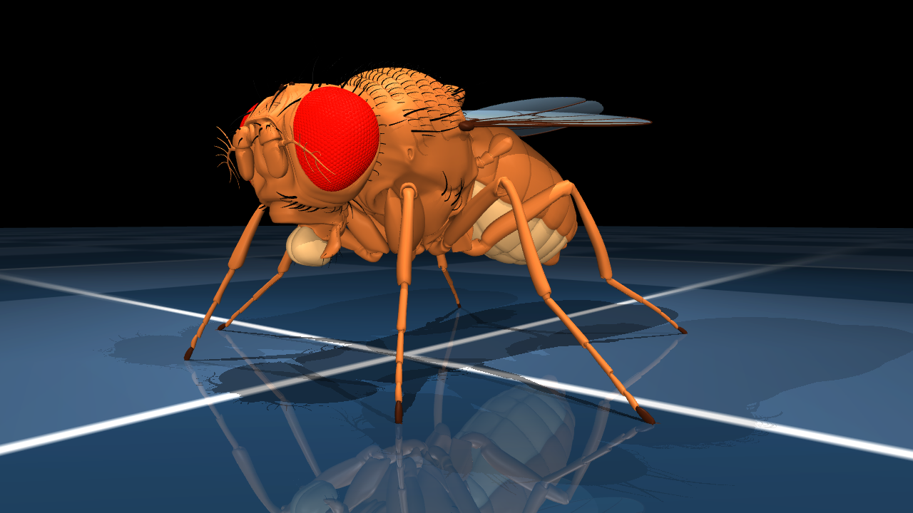
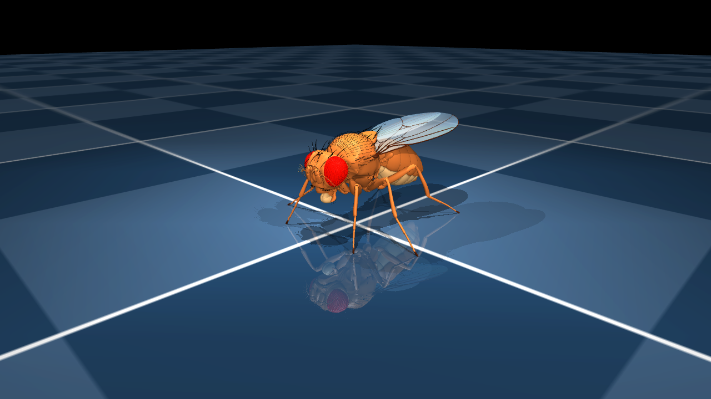
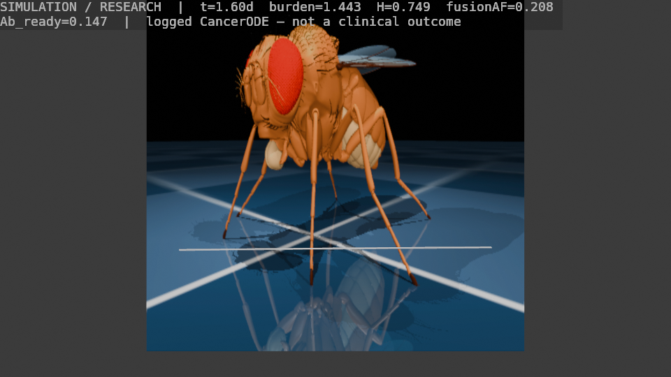

Simulation / research — not a medical device, not a clinical result
Optional lab reel · Blender HUD · MuJoCo fruitfly.xml · not the clinical briefing
Project Confluence
A research simulator: a mushroom-body-style connectome controller steers
unitless infusion U(t) over a mechanistic cancer ODE, with an
optional flybody embodiment. Scores on this page are simulated.
Honesty first
This site is an optional cinematic lab reel — stills and short films
from the local research loop. The mentor-facing briefing is
clinical/
(Vercel Root Directory clinical). This page is not a clinic, not a trial dashboard, and
it does not run the interactive session. The live UI is a long-lived
Python FastAPI + WebSocket process (Railway / Fly / your laptop), not a Vercel serverless function.
Project Confluence is a computational research tool.
It is not a medical device, not a diagnostic or therapeutic product, and
not approved by the FDA, EMA, or any regulator. Nothing here is medical
advice or a claim of clinical benefit.
No cure, disease-eradication, or treatment-path claims.
No FDA / EMA readiness and no Phase I / II / III result.
Tumor burden, resistance, fusion AF, and “protein channels” are ODE research scores, not patient outcomes.
Fly neurons in this repo do not synthesize biologics.
Three coupled pieces. Visualization is data-driven, not generative biology.
Connectome controller
Noisy observations enter a mushroom-body-style circuit (PN → sparse Kenyon
cells → MBON). Controllers A–F decode a unitless infusion vector
U. The default graph is a structured stub, not a literal FlyWire dump.
Cancer ODE
A mechanistic tumor-microenvironment integrator (LSODA) with host-health
H, resistance, stroma, and a fusion-clone coordinate. PK/PD
maps U into simulated concentrations. Research dynamics only.
Flybody (optional)
TuragaLab/flybody fruitfly.xml (MuJoCo, Apache 2.0) for the
hero mesh. The web UI boots without MuJoCo; missing mesh
shows an install CTA instead of a fake fly.
Blender / MuJoCo stills
Copied from docs/demo/ and docs/demo/blender/renders/. Stamped simulation / research.

MuJoCo fruitfly.xml — walker/hero, no HUD

MuJoCo — walker/track1Blender 4.x HUD still — SIMULATION / RESEARCH

Blender HUD animation frame 0008MuJoCo preview clip from the Blender sidecar pathImmune / chimeric-protein demo — research visualization
Run the interactive session locally
The live closed loop is FastAPI + WebSockets. Install the package and start
the ASGI app on your machine: